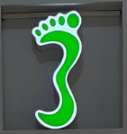
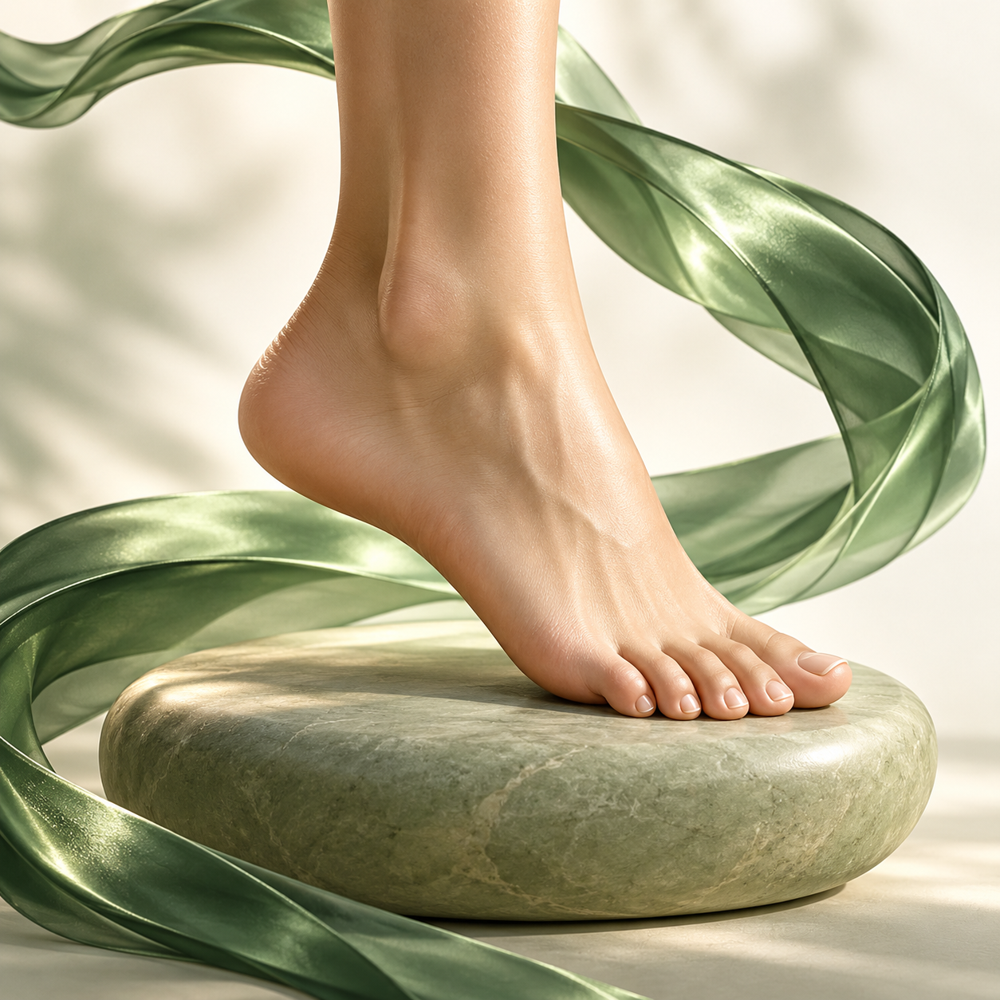

АКМесто для фотографии
Александра Куцытой
Основатель · подолог

КуцытойЦЕНТР ПОДОЛОГИИЗабота о стопах и ногтях, с которой
хочется двигаться дальше.

Поможем сориентироваться в услугах.
Выберите то, что важно вам сейчас.
Услуги центра и бесплатная консультация.
Стоимость и длительность — перед записью.
Подолог-эстетист · более 5 лет опыта
«Центр подологии Куцытой» объединяет подологию, эстетический уход и ногтевой сервис. Его основатель Александра помогает клиентам разобраться в вопросах ухода за стопами и ногтями и выбрать подходящий формат посещения.
В её профильном обучении — ортониксия, протезирование ногтей, работа с проблемными ногтевыми пластинами и профессиональной косметикой.
Подология, ортопедия и ногтевой сервис.
Фотографии и подробные профили дополним позже.
Основатель · подолог
Ортопед
Подолог
Мастер ногтевого сервиса
Сертификаты Александры Куцытой.
Нажмите, чтобы посмотреть документ.
Москва, Петрозаводская, 28 к. 1 · первый этаж
Ежедневно, 10:00–21:00
Здесь появится галерея реальных работ.
Добавим фотографии после предоставления материалов для публикации.
Покупка в центре или заказ на сайте.
Оплата при получении — без предоплаты онлайн.
Из центра на Петрозаводской, 28 к. 1.
Оплата при получении на месте.
Способ, срок и стоимость подтвердит администратор.
Оплата при доставке.
Короткие выдержки из опубликованных отзывов.
Мнения клиентов, без обещания одинакового результата.
Мастер все показала и объяснила
Девушка очень приятная и серьезная
Приятно, когда делом занимается профессионал и неравнодушный человек.
Лучший подолог
Источник: опубликованные отзывы на Яндекс Картах и в DIKIDI. Выдержки сокращены без изменения смысла.
Первое посещение начинается с разговора.
Можно прийти с вопросом, даже если
вы пока не знаете названия услуги.
Выберите консультацию или знакомую услугу. При записи можно оставить короткий комментарий.
На приёме уточняются состояние стоп и ногтей, подходящий объём работы и итоговая стоимость.
После посещения обсудите дальнейший уход и необходимость повторного визита.
Консультация подолога длится 30 минут и бесплатна. Можно прийти с вопросом, если вы пока не знаете, какая услуга вам нужна.
Специальная подготовка не требуется. Всё необходимое для процедуры предоставляет центр.
Дети до 16 лет приходят с родителями. С 16 лет возможно самостоятельное посещение. Возможность приёма ребёнка конкретного возраста уточните у центра.
Самостоятельные отмена и перенос предусмотрены не позднее чем за 3 часа до приёма. Если осталось меньше времени, свяжитесь с центром по телефону или в Telegram.
Нет. Услуги оплачиваются на месте в центре. Заказы с самовывозом — при получении в центре, с доставкой — при доставке. Оплату на сайте не принимаем.
Это начальная стоимость услуги. Итоговая сумма уточняется со специалистом с учётом объёма работы.
При записи можно выбрать Telegram, WhatsApp, Viber, MAX или ВКонтакте и указать контакт. Автоматическая отправка сообщений пока не подключена.
Запись открывается в личном кабинете и сохраняется на сервере центра. Доступное время зависит от подтверждённых графиков специалистов. Если время пока не открыто, позвоните +7 (985) 059-27-77 или напишите в Telegram. Старые тестовые записи из браузера не переносятся автоматически.
Центр подологии Куцытой
Ежедневно 10:00–21:00 · без выходных